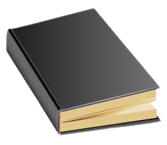

Читање книги е хоби на кое посветувам најмогу време. Обожавам книги од најразлични жанрови, фикција или нефикција. Сметам дека е одлично хоби бидејќи ми помага да научам најразлични работи, а во исто време да научам англиски на повисоко ниво бидејќи најголем дел од книгите кои ѓи читам се на англиски јазик.
Уште од како малечко дете видео игрите секогаш ме фасцинирале. Играње на видео игри го подобрува мојот фокус, го подигнува мојот натпреварувачки дух и ми ја подобрува креативноста. Омилен жарн на игри ми се: Sandbox, FPS, MOBA и Tower Defense
Шах е моето најново хоби. Големате компетиција, богатата историја и безограничениот потенцијал го прави шахот е една од најинтересните и најзабавните игри кои сум ги играл. Секој ден посветувам барем еден саат на шахот бидејќи е една од најнаградливите игри, што повише ја играш тоа подобар стануваш.